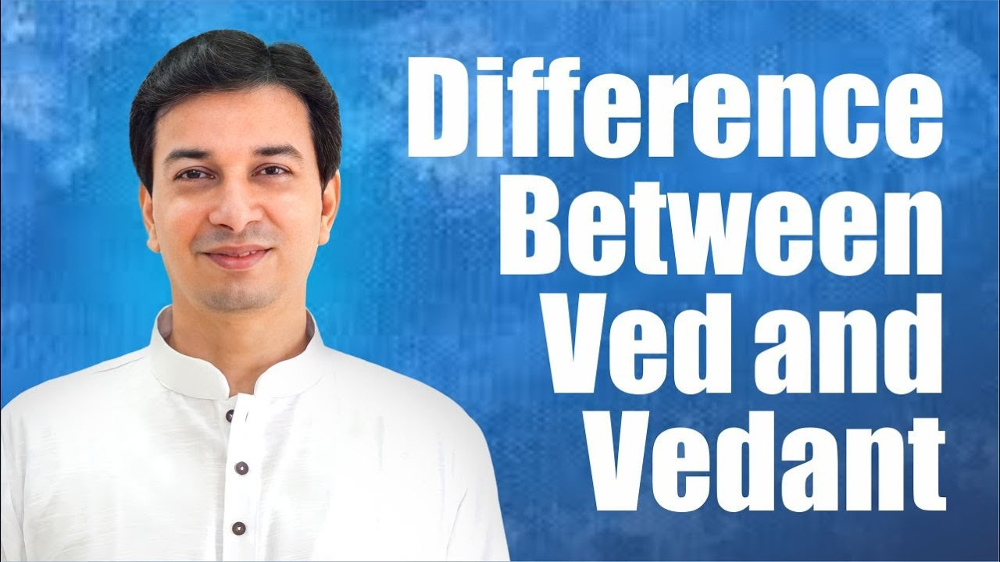

प्रस्तावना: वेद क्या है?
सनातन धर्म का मूल ग्रंथ पूछा जाए, तो हम तुरंत कहते हैं — वेद। पर वेद वास्तव में है क्या? इस प्रवचन में आचार्य उपेंद्र जी इसी प्रश्न से शुरुआत करते हैं और एक प्रचलित धारणा को तोड़ते हैं:
"वेद आपको क्या लगता है, कोई किताब है? Is it a book? कितने लोगों को लगता है कि वेद किताब है, कोई ग्रंथ है? अच्छा, ठीक है। चलो, वो भी मिथ्या बता देता हूँ।"
उनका कहना है कि सनातनी होने के नाते इतना तो हमें पता होना ही चाहिए:
"हम सनातनी ही बोलते हैं ना, हम सब हिंदू, तो कम से कम अपने ग्रंथ के बारे में तो पता होना चाहिए।"
यह अध्याय इसी समझ का क्रम है — वेद क्या है, वह कैसे बढ़ता गया, वेदांत कहाँ आता है, और उपनिषद का अर्थ क्या है।
१. वेद संज्ञा नहीं, क्रिया है
आचार्य जी एक सरल-सा व्याकरण का प्रश्न पूछते हैं — वेद नाम है या क्रिया?
"वेद — ये एक नाम है कि क्रिया है? मतलब ये noun है कि verb है?"
और उत्तर देते हैं:
"तो वेद is not a noun, not a book। वो किताब नहीं है, वो क्रिया है। वो क्रिया, action — 'अहं वेद', मैंने जाना। जानने की प्रक्रिया is called वेद।"
संस्कृत में विद् धातु का अर्थ है जानना; "अहं वेद" का अर्थ है "मैं जानता हूँ"। इसलिए वेद कोई वस्तु नहीं, जानने की प्रक्रिया है। और यह जानना किस बात का है?
"वेद का मतलब जानना। क्या जानना? ये लोक और परलोक का ज्ञान। यहाँ का सारा जो ज्ञान है, वो मैं धीरे-धीरे जानता हूँ — करते-करते मृत्यु के बाद क्या होगा, आगे क्या होगा, क्या बनूँगा, कि मोक्ष होगा, अगला जन्म क्या होगा — यहाँ तक का सारा ज्ञान। आध्यात्मिक ज्ञान, इधर का world का ज्ञान — इसका क्या नाम है? वेद।"
२. अपौरुषेय और देववाणी
वेदों को अपौरुषेय कहा जाता है — अर्थात् जिसे किसी एक पुरुष (व्यक्ति) ने नहीं रचा। साथ ही उन्हें देववाणी भी कहा गया है। आचार्य जी इन दोनों को "अहं ब्रह्मास्मि" (मैं ब्रह्म हूँ) से जोड़ते हैं:
"इसे अपौरुषेय बोला है — किसी एक व्यक्ति ने लिखा नहीं है। And इसे देववाणी भी बोला है। तो हर एक व्यक्ति देव है कि नहीं? हर एक में ब्रह्म है कि नहीं? 'अहं ब्रह्मास्मि'।"
यदि हर व्यक्ति में ब्रह्म है, तो हर व्यक्ति का जाना हुआ ज्ञान भी उसी देववाणी का अंश है। इसीलिए आचार्य जी वेद को एक असीम पात्र की तरह देखते हैं:
"तो वेद को एक समझो — एक पूरा बड़ा box है। Suppose एक container, बर्तन बड़ा, जिसका size infinite।"
३. तीनों गुणों का ज्ञान वेद में
इस असीम पात्र में क्या-क्या है? आचार्य जी श्रीमद्भगवद्गीता का एक श्लोक दिखाते हैं:
त्रैगुण्यविषया वेदा निस्त्रैगुण्यो भवार्जुन।
निर्द्वन्द्वो नित्यसत्त्वस्थो निर्योगक्षेम आत्मवान्॥
अर्थात् वेद तीनों गुणों के विषयों का वर्णन करते हैं; हे अर्जुन, तुम तीनों गुणों से ऊपर उठो — द्वंद्वों से मुक्त, नित्य सत्व में स्थित, योग-क्षेम (प्राप्ति और रक्षा) की चिंता से रहित और आत्मनिष्ठ बनो।
— श्रीमद्भगवद्गीता २.४५
तीन गुण हैं — सत्व (शुद्धता, ज्ञान), रज (इच्छा, क्रिया) और तम (जड़ता, अज्ञान)। आचार्य जी कहते हैं कि संसार में तीनों प्रकार के लोग हैं, और सब एक ही चीज़ खोज रहे हैं:
"तीन type के लोग हैं विश्व में। तामसिक लोग भी कुछ बड़बड़ करते होंगे, उनके अंदर भी ब्रह्म है।"
"क्योंकि finally सब आनंद ढूँढ रहे हैं — everybody is seeking happiness।"
तामसिक आनंद के अध्याय भी
इसलिए आनंद के हर रूप का वर्णन कहीं न कहीं वेद में मिलेगा — तामसिक रूप का भी:
"किसी ने कहा — बहुत खाना खाओ, पेट भर के खाओ, pizza खाओ, सब कुछ — तो आनंद मिलता है। तो एक chapter वेद में वो भी आ जाएगा। कहीं तो कोई वेद में उसके बारे में भी होगा, उसके बारे में फलश्रुति सब होगा।"
"कोई लिखेगा, दारू पियो, इतना पीते रहो, फिर आनंद आता है। कहीं तो अथर्ववेद में आपको ये सब chapter मिल जाएँगे, फलश्रुति सब कुछ।"
"उसके बाद कोई बोलेगा — नहीं, एक नहीं, चार-पाँच स्त्रियाँ होनी चाहिए, affairs, कामवासना — उससे आनंद होगा। कहीं तो उसकी भी कामना वाले अध्याय वेदों में मिल जाएँगे। क्योंकि वो तामसिक लोगों को fulfil करने वाला है।"
फलश्रुति यानी किसी कर्म या पाठ से मिलने वाले फल का वर्णन। आचार्य जी का आशय यह है कि ब्रह्म ने ही तामसिक स्थिति वाले व्यक्ति के रूप में भी जो जाना, वह भी इस अपौरुषेय ज्ञान में समा जाता है।
राजसिक और सात्विक दृष्टि भी
पर उसी पात्र में दूसरी दृष्टियाँ भी जुड़ती हैं:
"फिर राजसिक लोग भी यहाँ पर हैं, सात्विक लोग भी हैं ना। तो फिर कोई लिखेगा — doctor भी उसमें लिखेगा — 'हाँ, लेकिन इतना दारू पिया तो liver भी खराब होता है, ऐसा-ऐसा मत करो, so and so आहार चाहिए।' वो भी फिर वेदों में आएगा।"
"समझ में आया कि नहीं — how the वेद got developed? ऐसा करते-करते-करते सारा दुनिया भर का knowledge उसमें।"
४. वेद कभी समाप्त नहीं होता
यदि वेद जानने की प्रक्रिया है, तो क्या वह कभी रुक सकती है? आचार्य जी कहते हैं — नहीं:
"जो सारा ज्ञान collect हुआ, वो 'कालाय तस्मै नमः' है। तो वेद never ends। तो जानने की क्रिया आज भी खत्म हो गई क्या? तो आज computer से आप कुछ कर रहे हो, तो नया वो knowledge also is part of वेद, actually।"
जिन ग्रंथों को हम वेद के नाम से पढ़ते हैं, वे इस अनंत ज्ञान का सार मात्र हैं:
"लेकिन हम कुछ न कुछ समझने के लिए उसका सार एक किताब में पढ़ते हैं — यजुर्वेद, अथर्ववेद नाम है ना — तो उसका सिर्फ extract दिया है। Otherwise वेद कभी खत्म नहीं होता — it keeps on adding।"
"ऐसा आज नया invention कुछ आएगा, वो angle से भी कुछ लोगों को लाभ होता है। तो everything is part of the वेद।"
५. वेदांत: जहाँ जानना पूरा होता है
यदि सब कुछ वेद है, तो फिर अंतिम बात कौन कहेगा? आचार्य जी ऋषि-मुनियों और अवतारों की ओर संकेत करते हैं:
"तो फिर last को किसी ऋषि-मुनि ने भी तो लिखा होगा ना। कोई अवतार होंगे, उन्होंने भी कुछ लिखा होगा ना। तो वो final होगा कि नहीं? उनका statement is final।"
और उनका अंतिम वचन क्या है?
"तो उन्होंने जो लिखा होगा — 'ये सब ऊपर का सब छोड़ दो, ये सब मोह-माया है' — तो जो ऋषि-मुनि ने last को जो वाक्य लिखे होंगे, वहाँ पर वेद खत्म होता है। उसके ऊपर कोई teachings नहीं हैं।"
यहीं से वेदांत शब्द का अर्थ खुलता है — वेद + अंत:
"So that part is called as वेदांत — वेदों का अंत यहाँ पर हो जाता है। मतलब जानने की प्रक्रिया यहाँ खत्म हो गई। There is nothing more to understand beyond that।"
वह ग्रंथ जो कहता है, "मुझे मत पढ़ो"
आचार्य जी एक चौंकाने वाली बात कहते हैं:
"तो वेद is the only book which shouts and tells, 'Don't read me.' आप यकीन नहीं करोगे — 'Don't read me'।"
इसका आधार वही गीता का वचन है — निस्त्रैगुण्यो भवार्जुन:
"कृष्ण ने जो बोला है — 'निस्त्रैगुण्यो भवार्जुन' — वो सब पहले तीन गुण का छोड़, उसके आगे का, मतलब last part से पढ़ो। पढ़ना है तो क्या पढ़ना है? वेदांत।"
६. ज्ञानी को मोक्ष: हर मार्ग में ज्ञान
आचार्य जी वेदांत को ज्ञान कांड कहते हैं, और शास्त्र के वचन "ज्ञानी को मोक्ष" का अर्थ स्पष्ट करते हैं:
"वेदांत is called as ज्ञान कांड। 'ज्ञानी को मोक्ष' बोला है। ज्ञानी को मोक्ष मतलब क्या? School में जाकर पंडित जी बनना नहीं।"
ज्ञान किसी एक मार्ग की बात नहीं है। चारों मार्गों — कर्म योग, भक्ति योग, ज्ञान योग, ध्यान योग — में ज्ञान ही आधार है:
- कर्म योग:
"तुझे कर्म करना है? Work is worship, चलेगा। पर ज्ञान-युक्त कर्म कर। जो कर रहा है, उसका result समझ के, क्यों कर रहा है, समझ के। Get the knowledge from गुरु।"
- भक्ति योग:
"भक्ति करनी है? अंधश्रद्धा मत कर, ज्ञान-युक्त भक्ति कर। तू नारद भक्ति सूत्र वगैरह पहले ठीक से समझ ले। वो गोपियाँ कौन थीं, राधा कौन थीं — सब ये पहले जान ले। What is भक्ति — पहले समझ ले, फिर कर। अपनी मर्ज़ी से कुछ भी, तीनों गुणों के अनुसार, भक्ति भी मत कर।"
- ज्ञान योग:
"ज्ञान ही प्राप्त करना है — ज्ञान योग — वो भी ज्ञानी की तरह ज्ञान प्राप्त कर।"
- ध्यान योग:
"ध्यान लगाना है, तो photo निकालने के लिए हिमालय में जाके मत बैठो। ध्यान भी किसके ऊपर लगाना है, ये भी ज्ञान लेकर कर।"
इसलिए "ज्ञानी" का अर्थ है तत्वज्ञानी — जो मूल तत्व को समझने का प्रयास करे:
"तो इसलिए बोला है — ज्ञानी को मोक्ष। तत्वज्ञानी — first try to understand तत्वज्ञान।"
७. कर्मकांड, उपासना कांड, ज्ञान कांड
आचार्य जी वेद के तीन भागों का क्रम बताते हैं:
"तो वेदांत is nothing but the ज्ञान कांड। तो पहले बाकी सब क्या होगा? उपासना कांड, और उसके पहले होगा कर्मकांड। कर्मकांड में सिर्फ पूजा-पाठ, वो सब अपना यज्ञ वगैरह सब।"
- कर्मकांड — पूजा-पाठ, यज्ञ आदि अनुष्ठान
- उपासना कांड — आराधना और साधना
- ज्ञान कांड — वेदांत, अंतिम ज्ञान
८. उपनिषद: गुरु के समीप बैठना
यही ज्ञान कांड उपनिषद कहलाता है। आचार्य जी इस शब्द को खोलते हैं:
"तो ये ज्ञान कांड itself is converted into a word called उपनिषद। उप + नि + षद — sit close below the गुरु। ऐसी विद्या — गुरु के नज़दीक जाकर, उसके नीचे बैठते हुए।"
उप = समीप, नि = नीचे, षद् = बैठना। पर यह केवल शारीरिक निकटता नहीं है:
"और क्या? सात्विक अवस्था में। इसका मतलब शरणागति से। नज़दीक मतलब दिल से उसकी बातें समझते हुए ऐसा सीखना।"
शरणागति — गुरु के प्रति पूर्ण समर्पण — ही वह अवस्था है जिसमें वेदांत का ज्ञान उतरता है।
सारांश: मुख्य शिक्षाएँ
- १वेद किताब नहीं, क्रिया है — "अहं वेद", मैंने जाना। जानने की प्रक्रिया ही वेद है।
- २वेद लोक और परलोक दोनों का ज्ञान है — इस संसार से लेकर मृत्यु, पुनर्जन्म और मोक्ष तक।
- ३वेद अपौरुषेय और देववाणी है — हर व्यक्ति में ब्रह्म है, इसलिए हर जाना हुआ ज्ञान उसी असीम पात्र का अंश है।
- ४वेद में तीनों गुणों का ज्ञान है — तामसिक, राजसिक और सात्विक, क्योंकि everybody is seeking happiness।
- ५वेद कभी समाप्त नहीं होता — it keeps on adding; हम जो ग्रंथ पढ़ते हैं, वे उसका सार मात्र हैं।
- ६वेदांत यानी वेदों का अंत — ऋषि-मुनियों और अवतारों का अंतिम वचन, जिसके आगे जानने को कुछ नहीं। निस्त्रैगुण्यो भवार्जुन — पढ़ना है तो वेदांत पढ़ो।
- ७ज्ञानी को मोक्ष — कर्म, भक्ति, ज्ञान और ध्यान, चारों मार्ग ज्ञान-युक्त होने चाहिए।
- ८उपनिषद यानी गुरु के समीप बैठना — सात्विक अवस्था में, शरणागति से, दिल से समझते हुए सीखना।
